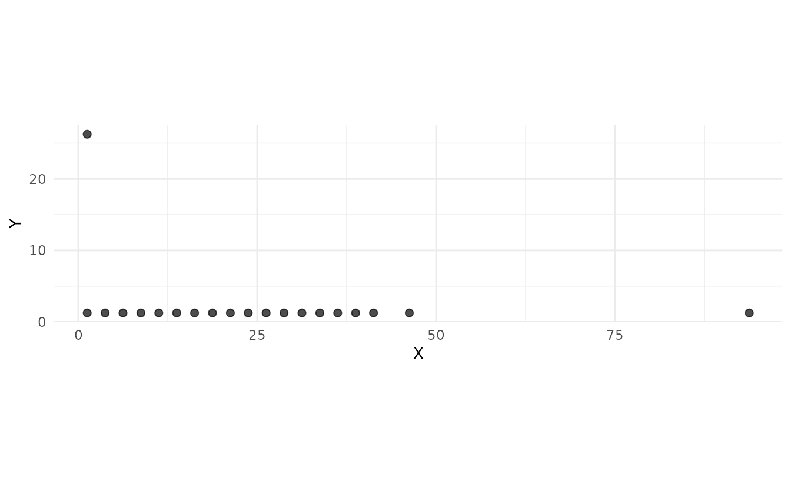
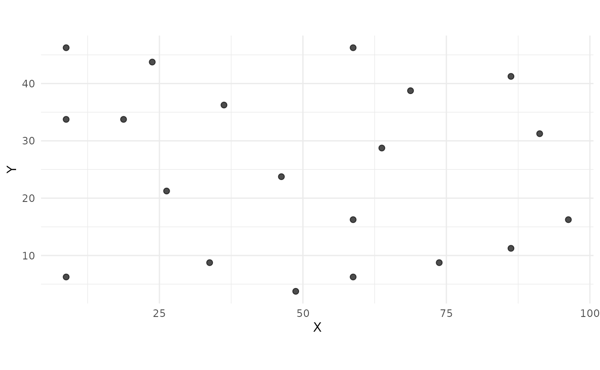
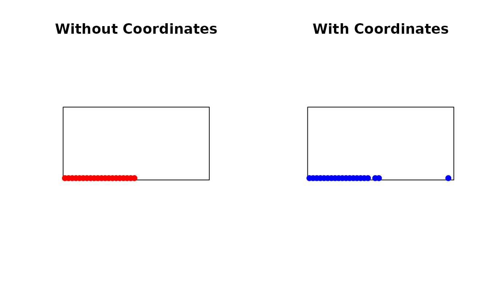
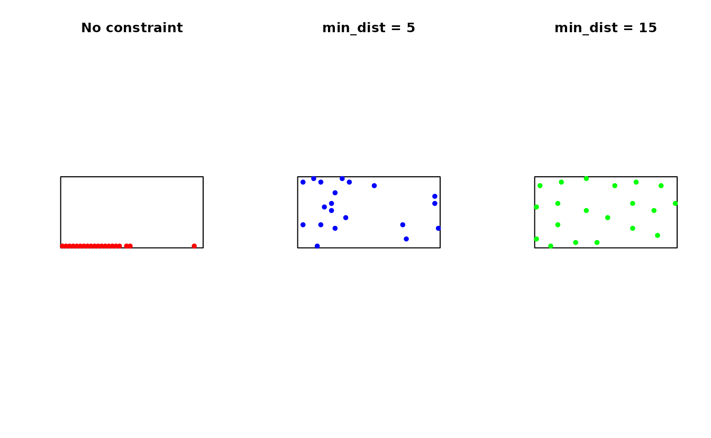
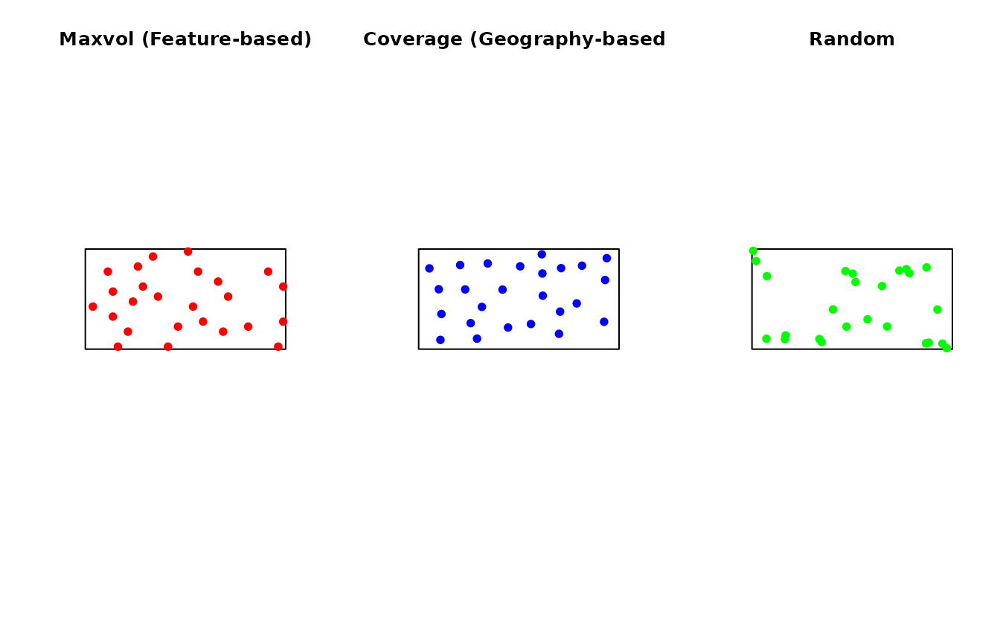

Maxvol Optimal Design Sampling
soilsampling Package Authors
2025-12-24
Source:vignettes/maxvol-sampling.Rmd
maxvol-sampling.RmdIntroduction
The maxvol algorithm is a D-optimal design method for selecting sampling locations by maximizing the determinant (volume) of a feature submatrix. Unlike traditional probability-based sampling, maxvol takes a deterministic optimal design approach that selects locations with maximum diversity in feature space.
This method is particularly effective when:
- Features explain soil variability: Terrain attributes correlate with soil properties
- Deterministic selection is preferred: Non-random, reproducible point placement
- Few samples are available: Optimal coverage with minimal sampling effort
- Model-based inference is planned: Kriging or machine learning predictions
Theoretical Background
The Maximum Volume Principle
Given a matrix of size (where represents locations and represents features), the maxvol algorithm selects rows that form a submatrix with approximately maximum determinant:
Geometrically, the determinant represents the volume of the -dimensional parallelepiped spanned by the row vectors. Maximizing this volume ensures that selected locations have maximal diversity in feature space.
D-Optimal Design
The maxvol algorithm implements D-optimal experimental design, which minimizes the determinant of the covariance matrix of parameter estimates. In practical terms, D-optimal designs:
- Spread samples across the feature space
- Minimize correlation between sample locations in feature space
- Maximize information for parameter estimation
Algorithm Steps
Feature Matrix Construction: Create matrix where each row represents a location and columns represent features (elevation, slope, TWI, etc.)
Normalization (optional): Standardize features to zero mean and unit variance
-
Rectangular Maxvol (
rect_maxvol):- Initialize with random rows
- Compute coefficient matrix
- Iteratively swap rows to maximize volume
- Apply distance constraints if specified
Point Selection: Selected row indices correspond to sampling locations
Basic Usage
library(soilsampling)
library(sf)
# Create a study area with terrain features
poly <- st_polygon(list(rbind(
c(0, 0), c(100, 0), c(100, 50), c(0, 50), c(0, 0)
)))
study_area <- st_sf(geometry = st_sfc(poly))
# In practice, you would compute features from a DEM
# For this example, we'll create a grid with synthetic features
set.seed(42)
# Create fine grid to represent potential sampling locations
grid <- st_make_grid(study_area, cellsize = c(2.5, 2.5), what = "centers")
grid_sf <- st_sf(geometry = grid)
grid_sf <- grid_sf[st_intersects(grid_sf, study_area, sparse = FALSE)[,1], ]
# Add synthetic terrain features
coords <- st_coordinates(grid_sf)
grid_sf$elevation <- coords[,2] + 10 * sin(coords[,1] / 20) + rnorm(nrow(coords), 0, 2)
grid_sf$slope <- abs(cos(coords[,1] / 15) * 5 + rnorm(nrow(coords), 0, 1))
grid_sf$twi <- 10 - grid_sf$slope + rnorm(nrow(coords), 0, 0.5)
grid_sf$aspect <- (atan2(coords[,2] - 25, coords[,1] - 50) + pi) / (2 * pi) * 360Simple Maxvol Sampling
# Select 20 sampling points using maxvol
samples_maxvol <- ss_maxvol(
grid_sf,
n = 20,
features = c("elevation", "slope", "twi", "aspect"),
normalize = TRUE,
add_coords = TRUE
)
print(samples_maxvol)
#> NA
#> NA
#> Number of samples: 20
# Plot results
ss_plot_samples(samples_maxvol)
With Distance Constraint
To avoid spatial clustering, apply a minimum distance constraint:
# Select points with minimum 10-unit spacing
samples_constrained <- ss_maxvol(
grid_sf,
n = 20,
features = c("elevation", "slope", "twi"),
min_dist = 10,
normalize = TRUE,
add_coords = TRUE
)
ss_plot_samples(samples_constrained)
Feature Selection
The choice of features is crucial for maxvol performance. Common terrain features for soil sampling:
Topographic Features
# Terrain features commonly used in pedometrics
features_topo <- c(
"elevation", # Height above reference
"slope", # Rate of elevation change
"aspect", # Direction of slope
"twi" # Topographic Wetness Index
)
# Other useful features (if computed from DEM):
# - Curvature (plan, profile)
# - Flow accumulation
# - Closed depressions
# - Topographic Position Index (TPI)
# - Terrain Ruggedness Index (TRI)Adding Coordinates
Including coordinates as features balances feature space and geographic space:
# Without coordinates: purely feature-based
samples_no_coords <- ss_maxvol(
grid_sf,
n = 20,
features = c("elevation", "slope"),
add_coords = FALSE,
normalize = TRUE
)
# With coordinates: balances features and geography
samples_with_coords <- ss_maxvol(
grid_sf,
n = 20,
features = c("elevation", "slope"),
add_coords = TRUE, # Default
normalize = TRUE
)
par(mfrow = c(1, 2))
plot(st_geometry(study_area), main = "Without Coordinates")
plot(st_geometry(samples_no_coords$samples), add = TRUE, pch = 19, col = "red")
plot(st_geometry(study_area), main = "With Coordinates")
plot(st_geometry(samples_with_coords$samples), add = TRUE, pch = 19, col = "blue")
Feature Normalization
Normalization is important when features have different scales:
# Check feature scales
summary(grid_sf[, c("elevation", "slope", "twi")])
#> elevation slope twi geometry
#> Min. :-13.53 Min. :0.01217 Min. : 1.527 POINT :800
#> 1st Qu.: 13.97 1st Qu.:2.05764 1st Qu.: 5.293 epsg:NA: 0
#> Median : 26.67 Median :3.56345 Median : 6.490
#> Mean : 26.33 Mean :3.36774 Mean : 6.644
#> 3rd Qu.: 38.62 3rd Qu.:4.58750 3rd Qu.: 7.998
#> Max. : 61.51 Max. :8.34239 Max. :11.528
# Without normalization: features with larger variance dominate
samples_raw <- ss_maxvol(
grid_sf,
n = 15,
features = c("elevation", "slope", "twi"),
normalize = FALSE,
add_coords = FALSE
)
# With normalization: equal weight to all features
samples_norm <- ss_maxvol(
grid_sf,
n = 15,
features = c("elevation", "slope", "twi"),
normalize = TRUE, # Recommended
add_coords = FALSE
)Recommendation: Always use
normalize = TRUE unless all features are already on similar
scales.
Distance Constraint Tuning
The distance constraint prevents spatial clustering when features vary locally:
# No distance constraint
samples_no_dist <- ss_maxvol(
grid_sf,
n = 20,
features = c("elevation", "slope", "twi"),
min_dist = NULL
)
# Small distance constraint
samples_small_dist <- ss_maxvol(
grid_sf,
n = 20,
features = c("elevation", "slope", "twi"),
min_dist = 5
)
# Large distance constraint
samples_large_dist <- ss_maxvol(
grid_sf,
n = 20,
features = c("elevation", "slope", "twi"),
min_dist = 15
)
par(mfrow = c(1, 3))
plot(st_geometry(study_area), main = "No constraint")
plot(st_geometry(samples_no_dist$samples), add = TRUE, pch = 19, col = "red", cex = 0.8)
plot(st_geometry(study_area), main = "min_dist = 5")
plot(st_geometry(samples_small_dist$samples), add = TRUE, pch = 19, col = "blue", cex = 0.8)
plot(st_geometry(study_area), main = "min_dist = 15")
plot(st_geometry(samples_large_dist$samples), add = TRUE, pch = 19, col = "green", cex = 0.8)
Choosing min_dist
Guidelines for setting the distance constraint:
-
Study area size: Larger areas → larger
min_dist -
Terrain ruggedness: More rugged → smaller
min_dist(features vary locally) -
Sample size: More samples → smaller
min_dist - Soil mapping unit size: Use typical minimum mapping unit diameter
# Rule of thumb: min_dist = (study area extent) / (2 * sqrt(n_samples))
bbox <- st_bbox(study_area)
extent <- sqrt((bbox$xmax - bbox$xmin) * (bbox$ymax - bbox$ymin))
n_samples <- 20
suggested_min_dist <- extent / (2 * sqrt(n_samples))
cat("Suggested min_dist:", round(suggested_min_dist, 1), "\n")
#> Suggested min_dist: 7.9Comparison with Other Methods
set.seed(123)
# Maxvol sampling
samp_maxvol <- ss_maxvol(
grid_sf,
n = 25,
features = c("elevation", "slope", "twi"),
min_dist = 8,
normalize = TRUE
)
# Spatial coverage (k-means based)
samp_coverage <- ss_coverage(study_area, n_strata = 25, n_try = 5)
# Simple random
samp_random <- ss_random(study_area, n = 25)
par(mfrow = c(1, 3))
plot(st_geometry(study_area), main = "Maxvol (Feature-based)")
plot(st_geometry(samp_maxvol$samples), add = TRUE, pch = 19, col = "red")
plot(st_geometry(study_area), main = "Coverage (Geography-based)")
plot(st_geometry(samp_coverage$samples), add = TRUE, pch = 19, col = "blue")
plot(st_geometry(study_area), main = "Random")
plot(st_geometry(samp_random$samples), add = TRUE, pch = 19, col = "green")
Practical Workflow
Step 1: Prepare Feature Data
library(terra) # For raster processing
# Load DEM
dem <- rast("path/to/dem.tif")
# Compute terrain features
slope <- terrain(dem, "slope")
aspect <- terrain(dem, "aspect")
tpi <- terrain(dem, "TPI")
tri <- terrain(dem, "TRI")
# Compute TWI (requires flow direction)
# ... (depends on your workflow)
# Stack features
features_stack <- c(dem, slope, aspect, tpi, tri)
# Convert to points
feature_points <- as.points(features_stack)
feature_sf <- st_as_sf(feature_points)Step 2: Run Maxvol
# Select sampling points
samples <- ss_maxvol(
feature_sf,
n = 50,
features = c("elevation", "slope", "aspect", "tpi", "tri"),
min_dist = 100, # meters, adjust for your study
normalize = TRUE,
add_coords = TRUE,
verbose = TRUE
)
# Check convergence
if (!samples$converged) {
warning("Maxvol did not converge. Consider increasing max_iters.")
}Advanced Usage
Custom Feature Matrix
You can provide your own feature matrix:
# Create custom feature matrix
coords_mat <- st_coordinates(grid_sf)
n_loc <- nrow(coords_mat)
custom_features <- matrix(
c(
grid_sf$elevation,
grid_sf$slope,
grid_sf$twi
),
ncol = 3
)
colnames(custom_features) <- c("elev", "slope", "twi")
# Use with maxvol
samples_custom <- ss_maxvol(
custom_features,
n = 20,
coords = coords_mat,
normalize = TRUE
)Integration with Existing Functions
Maxvol can complement existing sampling schemes:
# Use maxvol to densify an existing sample
# Suppose we have prior samples
prior_samples <- ss_random(study_area, n = 5)
# Use stratification to avoid prior samples
# Then use maxvol for additional points
# (This would require custom code to exclude prior locations)Performance Considerations
Algorithm Complexity
- Time complexity:
- Space complexity:
where: - = number of candidate locations - = number of features - = number of samples to select
Computational Tips
# For large datasets, reduce candidate locations
# Option 1: Coarser grid
grid_coarse <- st_make_grid(study_area, cellsize = c(5, 5), what = "centers")
# Option 2: Pre-filter using simpler criteria
# (e.g., remove unsuitable areas)
# Option 3: Sample from candidate pool
candidate_sample <- grid_sf[sample(nrow(grid_sf), 500), ]When to Use Maxvol
✅ Use maxvol when:
- Features strongly correlate with target variable
- You want deterministic, reproducible sampling
- Feature diversity is more important than geographic spread
- Sample size is limited
- You’re doing model-based inference (kriging, ML)
❌ Don’t use maxvol when:
- You need probability-based sampling for unbiased estimation
- Features don’t explain the target variable well
- Pure geographic coverage is the goal
- You need strictly random samples
References
Petrovskaia, A., Ryzhakov, G., & Oseledets, I. (2021). Optimal soil sampling design based on the maxvol algorithm. Geoderma, 383, 114733. DOI: 10.1016/j.geoderma.2020.114733
Goreinov, S. A., Oseledets, I. V., Savostyanov, D. V., Tyrtyshnikov, E. E., & Zamarashkin, N. L. (2010). How to find a good submatrix. In Matrix Methods: Theory, Algorithms And Applications (pp. 247-256). World Scientific.
Fedorov, V. (1972). Theory Of Optimal Experiments. Academic Press.
Walvoort, D.J.J., Brus, D.J., and de Gruijter, J.J. (2010). An R package for spatial coverage sampling and random sampling from compact geographical strata by k-means. Computers & Geosciences, 36, 1261-1267.